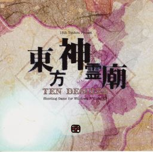

- Welcome to Touhou Wiki!
- Please register to edit. For assistance, check in with our Discord server or IRC channel.
Ten Desires
Ten Desires | |
|---|---|
|
 | |
| Developer | |
| Publisher | |
| Released |
Trial 0.01a: April 15, 2011 (Web) Full: August 13, 2011 (Comiket 80) |
| Genre |
Vertical Danmaku Shooting Game |
| Gameplay |
Single-Player Story Mode |
| Platforms | |
| Requirements |
|
Touhou
Gameplay[edit]
Ten Desires is unusual in that it represents a similar kind of "soft reboot" that Mountain of Faith did, but has never been recognized as such. While the changes are not as extreme as Mountain of Faith, many of the gameplay and engine traits of Double Dealing Character come from this game, not so much Undefined Fantastic Object. In particular, the game's pacing and stage design have been changed significantly, and later games mostly bear this design.
The major additions to the basic danmaku gameplay in Ten Desires include the Divine spirits and the Trance gauge. Divine Spirits are released when enemies are killed, bosses are damaged, and at certain scripted events. There are 4 varieties of spirits: blue, gray, purple, and green. Blue spirits increase the value of point items collected at the top of the screen, and most importantly, fill up the trance gauge a little bit. Gray spirits behave like the yellow-outlined point items in Mountain of Faith, granting the maximum possible amount of points no matter where on the screen they are collected. Gray spirits also fill the trance gauge more than blue spirits do.
Lives and bombs are still gained piece by piece. Purple spirits add 1 life piece and green spirits add 1 bomb piece. Initially, the player requires 8 life pieces to gain an extra life, but this value increases by 2 or 3 for every life gained this way (8, then 10, then 12, then 15, and so on). 8 bomb pieces grants the player an additional bomb, and this amount never changes. Certain enemies drop purple and green spirits, and bosses drop 1 purple spirit and 1 green spirit after every spell card (with the exception of their final spell card).
The Trance gauge consists of 0 to 3 flames that are built up by collecting blue and gray Divine Spirits. The player begins the game with 1 flame filled, and can collect up to a max stock of 3. The player can enter Trance either by getting hit with at least 1 flame filled, or by manually activating the state when all 3 flames are filled by pressing the C button. If the player enters Trance by getting hit, they will lose a life after the Trance timer runs out. While in Trance, the player's shot is much stronger, the player is invulnerable, and divine spirits are worth more. After exiting Trance, the Trance meter will be empty.
Unlike the other games, each stage does not have to be finished in order to unlock it for Practice Mode, only attempted.
Concept[edit]
After the main Touhou theme of Shinto and the Undefined Fantastic Object theme of Buddhism, Ten Desires focuses on Taoism. ZUN personally didn't know anything about Taoism before creating this game, so some of the work went into studying.
Gameplay-wise, ZUN claims that it's somewhere in between Perfect Cherry Blossom and Undefined Fantastic Object, but he wanted to give the game a different style from previous entries in the series. He also states that he wanted to have dialogue occurring during the final battle, but possibly due to system limitations settled on throw-away lines instead. He did the same thing in Fairy Wars. ZUN has kept difficulty down this time and simplified the game mechanics in order to suit a wider audience. [2]
ZUN has stated that he wanted this game to bridge the gap between the older games (Embodiment of Scarlet Devil, Perfect Cherry Blossom, and Imperishable Night) and the newer games (Mountain of Faith, Subterranean Animism, and Undefined Fantastic Object). The events in the game directly link everything in the newer games.
The extra stage, which story-wise is completely separate from the main game, was meant to be a little sequel bonus, as well as give to a feeling that it could be a possible link to the next game. Kasen Ibaraki and Byakuren Hijiri were other candidates for the boss. ZUN didn't actually decide what the extra stage was going to be until he decided upon the stage title, "Raise the Flag of Rebellion".
Story[edit]
The Story of Ten Desires takes place after the events of Undefined Fantastic Object. Divine spirits show up in Gensokyo, and our heroines are sent to investigate. They thought the actual culprit was Yuyuko Saigyouji, but Yuyuko says she does not know much about the events and suggest the heroine to go to the Myouren Temple. After battling through various stages to the Hall of Dreams' Great Mausoleum they find that the divine spirits flew here to witness the resurrection of a Saint, Toyosatomimi no Miko.
Music[edit]
A total of 17 tracks are featured in Ten Desires: seven stage and boss themes and one for the title, ending and staff roll. An eighteenth track is the player score theme, which was taken from Fairy Wars. "Desire Dream" (デザイアドリーム), the staff roll theme, is a slower and looser version of the stage 4 theme "Desire Drive" (デザイアドライブ).
Besides these normal versions of the tracks, all the stage and boss themes (except during the battle with Toyosatomimi no Miko) also have "spirit world" versions. The normal version focuses primarily on the melody and harmony and contains relatively few background voices compared to ZUN's previous compositions. Upon entering trance mode, the music switches to the "spirit world" version. It's recorded using a lower sampling rate (22050 Hz), and focuses primarily on the rhythm and accompanying voices. Mixes have been created utilizing both soundtracks, which produces a different sound than when listening to either track on its own.
ZUN has said that his favorite song in the game is Mononobe no Futo's theme, with the stage 4 theme coming in second. For Mamizou Futatsuiwa's theme, ZUN had to work pretty hard in order to create a song that stood apart from the rest of the game (as the story does). He was happy with how the song turned out, though. He then later created an arrangement of Mamizou's theme for Hopeless Masquerade, renaming it "Futatsuiwa from Gensokyo".
Press[edit]
The game was announced by ZUN in his blog on 28th February 2011.[2] ZUN announced the list of playable characters: Reimu Hakurei, Marisa Kirisame, Sanae Kochiya and Youmu Konpaku, making this the second main-entry Touhou game to feature four playable characters (the other being Mystic Square), excluding the multiplayer games (Phantasmagoria of Flower View and Phantasmagoria of Dim.Dream).
Due to the cancellation of Reitaisai 8 because of the Touhoku earthquake and tsunami and subsequent moving of the event to May 8, 2011, the demo release was postponed. The trial version was released for free download on the Internet on April 16, 2011. [3] Proceeds from those who bought the demo at the postponed event were donated to charity.[4]
The full game was released August 13, 2011 at Comiket 80. A few days later, two patches were released in quick succession in order to fix bugs and a few small display issues.
ZUN had given an interview in Chara☆Mel Febri volume 9 which revealed more about the characters, music of the game and Ten Desires in general.[5]
English patches[edit]
Touhou Community Reliant Automatic Patcher / THCRAP
- Community translations from the Touhou Patch Center wiki.
- Select lang_en during patching.
- Video walkthrough
- Also available as a pre-packaged standalone (not recommended).
These patches are a community translation based on Touhou Wiki and the English Touhou Patch Center Portal.
Visit the thpatch game page to find the specific patch contents for Ten Desires.
External Links[edit]
Official[edit]
- Official Ten Desires Website (Japanese)
- Demo download links (Japanese)
- Patch 1.00c
References[edit]
- ↑ ZUN (26 July 2011). "Comiket Release" (in 日本語). Retrieved 27 July 2011.
定期的に夏は何が出るのか、神霊廟はいつ完成するのかと聞かれるので言っておきます。そりゃもう夏コミに神霊廟の完成版を出すつもりです、それ以外に何が出るというのかとｗ
- ↑ 2.0 2.1 ZUN (28 Februari 2011). "東方Project第13弾 東方神霊廟 ～ Ten Desires". Invisible Games and Japanese (in 日本語). Team Shanghai Alice. Retrieved 19 December 2011. Unknown parameter
|trans_title=ignored (help); Check date values in:|date=(help) - ↑ ZUN (16 April 2011). "東方神霊廟 ～ Ten Desires. 体験版" (in 日本語). Retrieved 16 April 2011.
- ↑ Tateito1 (25 March 2011). "どうせ二軒目ラジオたいした事言わないと思ってたら、神霊廟はWEB配布が先だった件について" (in 日本語). Retrieved 25 March 2011.
- ↑ Chara☆Mel (25 November 2011). お詫びと訂正/ "Vol.09 掲載内容". Chara☆Mel Febri vol. 9 (in 日本語). Ichijinsha. p. 44. Retrieved 19 December 2011.